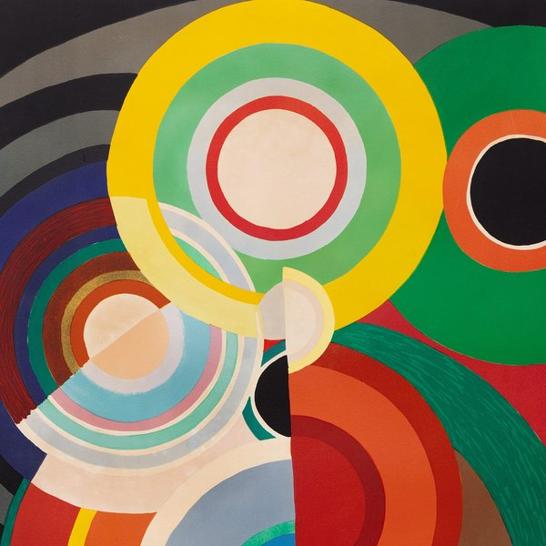
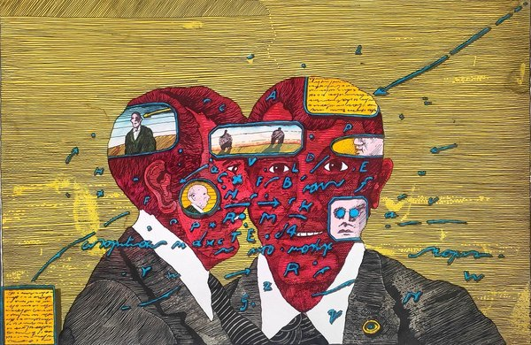
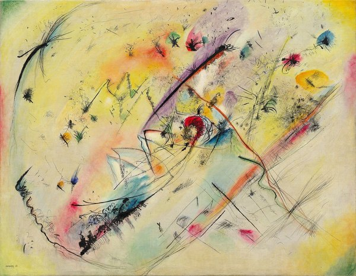
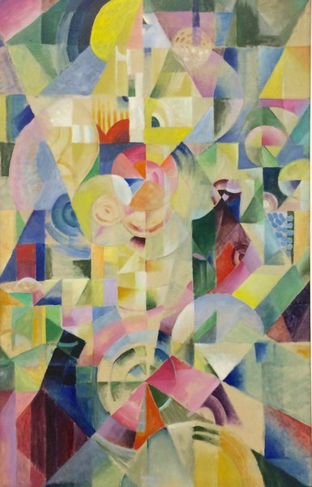
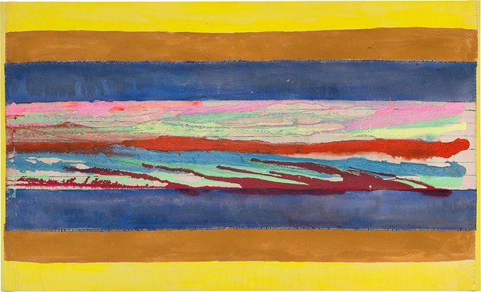
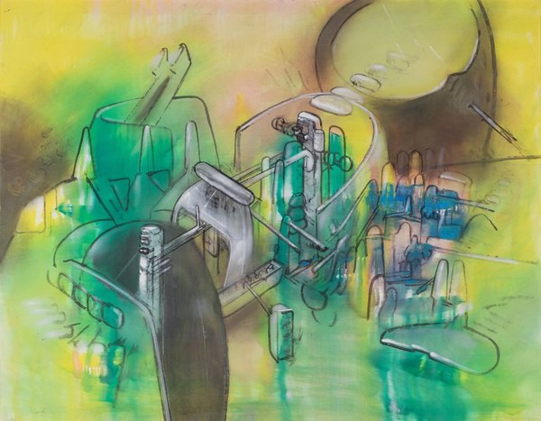
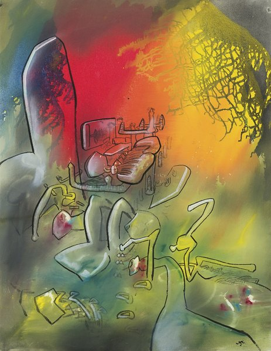
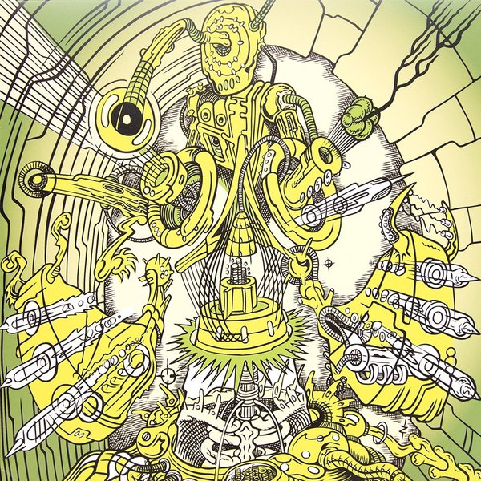

CRVI000184Designer unknown - Швейныя машины Компаніи Зингеръ — Singer Company Sewing Machines
Russian Singer emblem · advertising poster
Russian Singer emblem · advertising poster

CRVI001377Thelonious Monk Trio - Thelonious Monk Trio
Designer unrecorded · Esquire 75 · 1956
Designer unrecorded · Esquire 75 · 1956

CRVI001775Jirō Yoshihara - Circle

CRVI000576Alvin Lustig - Illuminations
Arthur Rimbaud · New Directions, New Classics NC14 · 1945
Arthur Rimbaud · New Directions, New Classics NC14 · 1945

CRVI000575Alvin Lustig - Selected Poems
Ezra Pound · New Directions, New Classics NC22 · 1949
Ezra Pound · New Directions, New Classics NC22 · 1949

CRVI002221Anni Albers - Design for a 1926 unexecuted wall hanging
1926
1926

CRVI001694Filippo Tommaso Marinetti - Parole in libertà
1932
1932

CRVI001715Heinrich Campendonk - Stillleben mit zwei Köpfen
1914
1914

CRVI000594Unknown - Money Advisor: How to Borrow Money… Cleverly
New York, January 24, 1972 · 1972
New York, January 24, 1972 · 1972

CRVI000861Julian Stanczak - Yellow Filtration
Screenprint · 66 × 66 cm · 1981
Screenprint · 66 × 66 cm · 1981

CRVI000863Julian Stanczak - Sharing in Orange
Acrylic on canvas · 107.3 × 107.3 cm · 1970
Acrylic on canvas · 107.3 × 107.3 cm · 1970

CRVI000385Herman Chin Loy - Aquarius Recording Co
Designer unknown · Ltd. · 1975
Designer unknown · Ltd. · 1975

CRVI000150Art Blakey's Jazz Messengers - Art Blakey's Jazz Messengers
Designed by Marvin Israel · Atlantic 1278 · 1957
Designed by Marvin Israel · Atlantic 1278 · 1957

CRVI001831Richard Anuszkiewicz - Grand Treasure
1968
1968

CRVI002411Peter Max - One Nation under God—This Is a Blessed Country
1976
1976

CRVI000152Cressida - Asylum
Designed by Keef · Vertigo 6360 025 · 1971
Designed by Keef · Vertigo 6360 025 · 1971

CRVI000727Raglani - Husk
Front cover · designed by Robert Beatty
Front cover · designed by Robert Beatty

CRVI002191Georges Braque - Castle at La Roche-Guyon
1909
1909

CRVI002273Agnes Martin - Untitled

CRVI001722František Kupka - Self-Portrait
1907
1907

CRVI001733Natalia Goncharova - Cats (Rayist Perception in Rose, Black and Yellow)
1913
1913

CRVI001104Utagawa Yoshifusa - Two Samurai, from Twenty-four Famous Generals of Kai
Woodblock print (nishiki-e) · Kai Nijuyon-sho no Uchi · 1843–1845
Woodblock print (nishiki-e) · Kai Nijuyon-sho no Uchi · 1843–1845

CRVI001028Adrian Ghenie - Untitled painting
Oil on canvas · Sold Sotheby's London
Oil on canvas · Sold Sotheby's London

CRVI001667Robert Delaunay - Window
1912
1912

CRVI000017David Chesworth - 50 Synthesizer Greats
Designed by Geronimo Creative Services · 1979
Designed by Geronimo Creative Services · 1979

CRVI000834Seymour Chwast - The Left-Handed Designer
Jacket panel · Harry N. Abrams · 1985
Jacket panel · Harry N. Abrams · 1985

CRVI001307Lee Morgan - Charisma
Designed by Ann Meisel, photograph by Francis Wolff · Blue Note 4312 · 1969
Designed by Ann Meisel, photograph by Francis Wolff · Blue Note 4312 · 1969

CRVI001410Peter Max - The Color Spectrum of America — Many Faiths
Peter Max · 1976 · billboard for the GSA Art-in-Architecture Program · 1976
Peter Max · 1976 · billboard for the GSA Art-in-Architecture Program · 1976

CRVI000609Unknown - First, We Kill All the Computers
New York, July 24, 1995 · 1995
New York, July 24, 1995 · 1995

CRVI001553André Masson - L'homme emblématique
1939
1939

CRVI000814Seymour Chwast - June 12 March
Mixed media · 46 × 61 cm · 1982
Mixed media · 46 × 61 cm · 1982

CRVI000582Alvin Lustig - World Inventors Exposition
1947
1947

CRVI002345Sonia Delaunay - Automne
1965
1965

CRVI000145Gentle Giant - Octopus
Designed by Roger Dean · 1972
Designed by Roger Dean · 1972

CRVI001099Kim Laughton - Untitled

CRVI002093Lucian Freud - Naked Girl Asleep II
1968
1968

CRVI001871Unidentified - Wave composition

CRVI002049John Currin - Bea Arthur Naked

CRVI002086Andreas Gursky - Shanghai
2000
2000

CRVI001983Amy Sherald - Woman in a teal dress

CRVI001676Carlo Carrà - Swimmers
1912
1912

CRVI001237Mati Klarwein - St John
Painting · plate V05-St-John-3 on the artist's own site
Painting · plate V05-St-John-3 on the artist's own site

CRVI002165Roberto Matta - Atlas de médication

CRVI000765Paula Scher - The Diva is Dismissed
Serigraph · 116.8 × 76.5 cm · 1994
Serigraph · 116.8 × 76.5 cm · 1994

CRVI001055Takenobu Igarashi - Alphabet
Published by the Takenobu Igarashi Archive
Published by the Takenobu Igarashi Archive

CRVI000338Eddie Floyd - Knock On Wood
Designer unknown · Stex · 1967
Designer unknown · Stex · 1967

CRVI001698Filippo Tommaso Marinetti - Futurismo
Poster · 1932
Poster · 1932

CRVI001415Paul Bacon, Ken Braren and Harris Lewine - Everybody Digs Bill Evans
Album cover · Riverside RLP 1129 · 1959
Album cover · Riverside RLP 1129 · 1959

CRVI002408Peter Max - Flowers in the Wind—American Breeze
1976
1976

CRVI001497El Lissitzky - New Man
1923
1923

CRVI002371Jan Sawka - Two suited figures sharing a red head

CRVI000433Neutral Milk Hotel - In The Aeroplane Over The Sea
Designer unknown · MGM Records · 1998
Designer unknown · MGM Records · 1998

CRVI001478Vincent van Gogh - Madame Roulin and Her Baby
1888
1888

CRVI001477Vincent van Gogh - L'Arlésienne: Madame Joseph-Michel Ginoux (Marie Julien, 1848–1911)
1888–89
1888–89

CRVI002489Kiyoshi Awazu - 飢餓海峡 (Kiga Kaikyō / Starving Strait), Bungakuza
1977
1977

CRVI001663Jean Metzinger - Bacchante
1906
1906

CRVI001522Barnett Newman - Yellow Painting
1949
1949

CRVI001766Oskar Schlemmer - Costume from the Triadic Ballet

CRVI000244Matthias Vogt Trio - Changing Colours
Designer unknown · INFRACom! · 2006
Designer unknown · INFRACom! · 2006

CRVI001257Alejandro Torrecilla - Satchidananda Comics #6 — Alice Coltrane
Illustration by Alejandro Torrecilla · as Torre Pentel · 2026
Illustration by Alejandro Torrecilla · as Torre Pentel · 2026

CRVI001162Kenny Dorham - Una Mas
Designed by Reid Miles, photograph by Francis Wolff · Blue Note BLP 4127 · 1963
Designed by Reid Miles, photograph by Francis Wolff · Blue Note BLP 4127 · 1963

CRVI002199Marcel Duchamp - The King and Queen Surrounded by Swift Nudes
1912
1912

CRVI001729Stanton Macdonald-Wright - Still Life with Red Vase Synchromy

CRVI000821Seymour Chwast - Nicholas Nickleby
Mobil Showcase Network · 76 × 118 cm · 1983
Mobil Showcase Network · 76 × 118 cm · 1983

CRVI001399Giorgio de Chirico - The Two Masks
Giorgio de Chirico · 1926 · 1926
Giorgio de Chirico · 1926 · 1926

CRVI002389Emil Nolde - Sea under yellow clouds

CRVI001235Mati Klarwein - Conceptual Tree
Painting · plate V19-Conceptual-Tree on the artist's own site
Painting · plate V19-Conceptual-Tree on the artist's own site

CRVI000097Tonto - It's About Time
Designer unknown · Polydor · 1974
Designer unknown · Polydor · 1974

CRVI001636Emil Nolde - Dance Around the Golden Calf
1910
1910

CRVI002319Tauba Auerbach - Marbled composition

CRVI001783Shōzō Shimamoto - Untitled

CRVI001642Max Pechstein - The Masked Woman
1910
1910

CRVI002101Lucio Fontana - Concetto Spaziale, Attese

CRVI001765Anni Albers - Design for Wall Hanging
1925
1925

CRVI002094Lucian Freud - Portrait of Christian Bérard
1948
1948

CRVI002271Sol LeWitt - Forms Derived from a Cube

CRVI001594Tom Blackwell - Rainbow '74

CRVI001672Giacomo Balla - Girl Running on a Balcony
1912
1912

CRVI002206Wassily Kandinsky - Light Picture (Helles Bild)
1913
1913

CRVI002213Piet Mondrian - Broadway Boogie Woogie
1943
1943

CRVI001731Arthur Dove - Sun
1943
1943

CRVI002242unattributed - Prismatic composition in pale greens, pinks and yellows

CRVI001044Kiyoshi Awazu - mano-dharma concert — Takehisa Kosugi
Poster
Poster

CRVI001251Howard Wales & Jerry Garcia - Hooteroll?
Painting by Mati Klarwein · Douglas KZ 30859 · 1971
Painting by Mati Klarwein · Douglas KZ 30859 · 1971

CRVI000827Seymour Chwast - A Tribute to Arthur Freed
Gallery of Modern Art, New York · 1967
Gallery of Modern Art, New York · 1967

CRVI001671Giacomo Balla - Iridescent Interpenetration No. 4, Study of Light
1912
1912

CRVI000426ザ・タイガース - 世界はボクらを待っている
Designer unknown · ポリドール · 1968
Designer unknown · ポリドール · 1968

CRVI001495El Lissitzky - Flying to Earth from a Distance
1920
1920

CRVI000110Kiyoshi Awazu - The 6th Contemporary Japanese Sculpture Exhibition
第6回現代日本彫刻展 · Ube City Open-Air Sculpture Museum, Tokiwa Park, Ube, Yamaguchi · 1975
第6回現代日本彫刻展 · Ube City Open-Air Sculpture Museum, Tokiwa Park, Ube, Yamaguchi · 1975

CRVI001706Franz Marc - Sheaf of Grain
1907
1907

CRVI001795Alma Thomas - The Eclipse

CRVI002494Kiyoshi Awazu - art now 現代の美術 (Gendai no Bijutsu), Kodansha

CRVI000585Unknown - The Future of the Democratic Party
New York, November 4, 1968 · 1968
New York, November 4, 1968 · 1968

CRVI002228László Moholy-Nagy - Leuk 5
1946
1946

CRVI000649Unknown - Speaking Emoji
New York, November 17-23, 2014 · 2014
New York, November 17-23, 2014 · 2014

CRVI000772Erving Goffman - Interaction Ritual
Doubleday Anchor Original A596 · cover signed “Giusti” · 1967
Doubleday Anchor Original A596 · cover signed “Giusti” · 1967

CRVI000768Paula Scher - Blade to the Heat
The Public Theater · 74 × 112 cm · 1994
The Public Theater · 74 × 112 cm · 1994

CRVI000117Tadanori Yokoo - Are You Ready for Foods?
Advertisement for a Chinese restaurant · 1989
Advertisement for a Chinese restaurant · 1989

CRVI001938Unidentified - Woman with pink flowers

CRVI001807James Rosenquist - White Bread
1964
1964

CRVI000299The Residents - The Commercial Album
Designer unknown · Ralph · 1980
Designer unknown · Ralph · 1980

CRVI002473Larry Harlow - Yo Soy Latino
1982
1982

CRVI002170Frank Bowling - Flow with Spencer I
2012
2012

CRVI001878Frank Stella - Gran Cairo
1962
1962

CRVI002183Etel Adnan - Untitled

CRVI001332Barney Bubbles - Vinyl
Designed by Barney Bubbles
Designed by Barney Bubbles

CRVI000220James Brown & The Famous Flames - Think!
Designer unknown · King · 1960
Designer unknown · King · 1960

CRVI002259Roy Lichtenstein - Crying Girl
1963
1963

CRVI000473Unknown - Pikettymania
Bloomberg Businessweek, June 2 – June 8, 2014 · 2014
Bloomberg Businessweek, June 2 – June 8, 2014 · 2014

CRVI000296Miles Davis - On The Corner
Designer unknown · Columbia · 1972
Designer unknown · Columbia · 1972

CRVI001492Alexander Rodchenko - White Circle
1918
1918

CRVI000553Graeme James - The Horror Ahead
The Economist, March 5-11, 2022 · 2022
The Economist, March 5-11, 2022 · 2022

CRVI000764Paula Scher - The Public Theater, 95–96 Season
Lithograph · 152.4 × 114.3 cm · 1995
Lithograph · 152.4 × 114.3 cm · 1995

CRVI000718Oneohtrix Point Never - Magic Oneohtrix Point Never
Insert panel A · designed by Robert Beatty · Warp Records · 2020
Insert panel A · designed by Robert Beatty · Warp Records · 2020

CRVI002281John Baldessari - Yellow interior with a red squiggle

CRVI000012Foodman - Ez Minzoku
Artwork by Ellen Thomas, Keith Rankin · 2017
Artwork by Ellen Thomas, Keith Rankin · 2017

CRVI000537Gail Bichler - How America Spends
The New York Times Magazine, May 23, 2021 · 2021
The New York Times Magazine, May 23, 2021 · 2021

CRVI001379Sonny Rollins - The Standards Set by Sonny Rollins and Thelonious Monk
Designer unrecorded · Esquire 148 · 1957
Designer unrecorded · Esquire 148 · 1957

CRVI002320Tauba Auerbach - Marbled composition

CRVI000578Alvin Lustig - The Great Gatsby
F. Scott Fitzgerald · New Directions, New Classics NC9 · 1945
F. Scott Fitzgerald · New Directions, New Classics NC9 · 1945

CRVI002263Roy Lichtenstein - Sunrise

CRVI001139The Horace Silver Quintet - Horace-Scope
Artwork by Paula Donohue, photograph by Francis Wolff · Blue Note BLP 4042 · 1960
Artwork by Paula Donohue, photograph by Francis Wolff · Blue Note BLP 4042 · 1960

CRVI000637Unknown - Yahoo's $8 Billion Black Hole
Bloomberg Businessweek, May 2-8 2016 · 2016
Bloomberg Businessweek, May 2-8 2016 · 2016

CRVI000621Maurizio Di Iorio - The Mutant Future of Food
WIRED, August 2018 · 2018
WIRED, August 2018 · 2018

CRVI000513Oliver Munday - The Choice Is Between Freedom and Fear
The Atlantic, June 2023 · 2023
The Atlantic, June 2023 · 2023

CRVI000264Enchantment of story-telling – Roman Cieślewicz - Affabulazione
Theatre Poster · 1984 · 1984
Theatre Poster · 1984 · 1984

CRVI002214Piet Mondrian - New York City I
1942
1942

CRVI000058Flying Lotus - Pattern +Grid World
Designed by Theo Ellsworth · Warp Records · 2010
Designed by Theo Ellsworth · Warp Records · 2010

CRVI000844domus - domus 690
gennaio 1988 · 1988
gennaio 1988 · 1988

CRVI000179Genesis - Nursery Cryme
Designed by Paul Whitehead · Charisma CAS1052 · 1971
Designed by Paul Whitehead · Charisma CAS1052 · 1971

CRVI001331Barney Bubbles - Don't Join!
Designed by Barney Bubbles
Designed by Barney Bubbles

CRVI002452Roberto Matta - Yellow and green architecture of figures

CRVI000418De La Soul - 3 Feet High And Rising
Designer unknown · Tommy Boy · 1989
Designer unknown · Tommy Boy · 1989

CRVI000852Richard Turley - No Chill
MTV
MTV

CRVI002458Roberto Matta - Red and yellow ground with pale figures

CRVI000069Cluster - Cluster Il
Designer unknown · Brain · 1972
Designer unknown · Brain · 1972

CRVI002153Keith Haring - Untitled (Dance)
1987
1987

CRVI002441Zeke Clough - Yellow figure among machine parts

CRVI001165Lee Morgan - The Sidewinder
Designed by Reid Miles, photograph by Francis Wolff · Blue Note BLP 4157 · 1964
Designed by Reid Miles, photograph by Francis Wolff · Blue Note BLP 4157 · 1964

CRVI000335Sam & Dave - Hold On, I'm Comin'
Designer unknown · Stax · 1966
Designer unknown · Stax · 1966

CRVI001867Dan Flavin - Untitled

CRVI002152Keith Haring - Untitled
1982
1982

CRVI002261Roy Lichtenstein - Crying Girl
1964
1964

CRVI001576Charles Sheeler - The Artist Looks at Nature
1943
1943

CRVI000648Billy Sorrentino - Sex in the Digital Age
WIRED, March 2015 · 2015
WIRED, March 2015 · 2015

CRVI001786Tsuruko Yamazaki - Untitled

CRVI000147The Grassella Oliphant Quartette - The Grass Roots
Designed by Loring Eutemey · 1965
Designed by Loring Eutemey · 1965

CRVI000869John Provencher - The Yellow Wallpaper
A24 Zine, issue 33 · guest-edited by Kane Parsons · 2026
A24 Zine, issue 33 · guest-edited by Kane Parsons · 2026

CRVI001371Steve Lacy - Reflections: Steve Lacy Plays Thelonious Monk
Designer unrecorded · New Jazz 8206 · 1959
Designer unrecorded · New Jazz 8206 · 1959

CRVI002167Roberto Matta - Untitled

CRVI000679Jackie Nickerson - For the Love of Lupita Nyong'o
Vanity Fair, October 2019 · 2019
Vanity Fair, October 2019 · 2019

CRVI000717Oneohtrix Point Never - Magic Oneohtrix Point Never
Back cover · designed by Robert Beatty · Warp Records · 2020
Back cover · designed by Robert Beatty · Warp Records · 2020
CRVI002470Pop Will Eat Itself - X Y & Zee

CRVI000261Wiktor Gorka - The Great Escape
Film Poster Designed By Wiktor Gorka · 2018 · 2018
Film Poster Designed By Wiktor Gorka · 2018 · 2018

CRVI001640Max Pechstein - The Red House
1911
1911

CRVI002498Koichi Sato - グラフィックデザイナー 佐藤晃一展 (Graphic Designer Koichi Sato)
2017
2017

CRVI000845domus - domus 1111
April 2026 · 2026
April 2026 · 2026

CRVI000133Tadanori Yokoo - JUN ROPÉ
Fashion advertising
Fashion advertising

CRVI000016Frank Coe, Forrest J. Ackerman - Music For Robots
Designed by Frank Coe · Science Fiction Records · 1961
Designed by Frank Coe · Science Fiction Records · 1961

CRVI001637Emil Nolde - Self-Portrait
1912
1912

CRVI002328Ed Ruscha - OOF
1962-63
1962-63

CRVI000297King Tubby - The Roots Of Dub
Designer unknown · Total Sounds / Clock Tower Records Inc. · 1976
Designer unknown · Total Sounds / Clock Tower Records Inc. · 1976

CRVI001815Eduardo Paolozzi - Sack-o-Sauce
1948
1948

CRVI001982Amy Sherald - Woman in a strawberry-print dress

CRVI000552Thomas Alberty - This Magazine Can Help You Get an Abortion
New York, May 23-June 5, 2022 · 2022
New York, May 23-June 5, 2022 · 2022

CRVI000631Unknown - What Lies Ahead
WIRED, February 2017 Most Controversial · 2017
WIRED, February 2017 Most Controversial · 2017

CRVI001494Alexander Rodchenko - Battleship Potemkin
Film poster · 1925
Film poster · 1925

CRVI002262Roy Lichtenstein - Explosion

CRVI000213Unknown - Stare
Reaction GIF · Walton Goggins as Rick Hatchett, The White Lotus · 72 frames, 3.6s loop · 2025
Reaction GIF · Walton Goggins as Rick Hatchett, The White Lotus · 72 frames, 3.6s loop · 2025

CRVI000210Unknown - Confused
Reaction GIF · Jennifer Saunders as Edina Monsoon · 20 frames, 1.3s loop
Reaction GIF · Jennifer Saunders as Edina Monsoon · 20 frames, 1.3s loop

CRVI000195Unknown - Desk Flip
Reaction GIF · Panda in an office · 43 frames, 5.2s loop
Reaction GIF · Panda in an office · 43 frames, 5.2s loop

CRVI000205Unknown - Time
Reaction GIF · Matthew McConaughey as Rust Cohle · 31 frames, 3.1s loop
Reaction GIF · Matthew McConaughey as Rust Cohle · 31 frames, 3.1s loop

CRVI000854Richard Turley - [MTV ident — waterfall face]
MTV ident · animated
MTV ident · animated